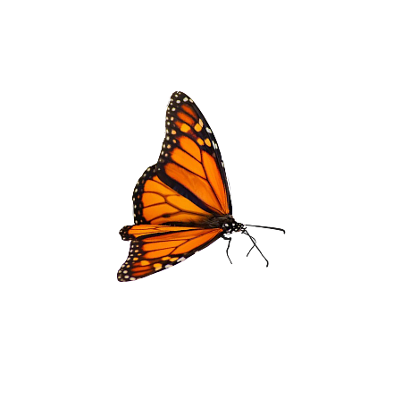
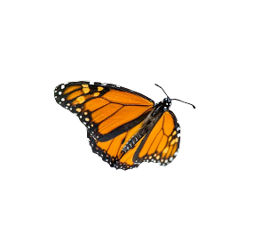
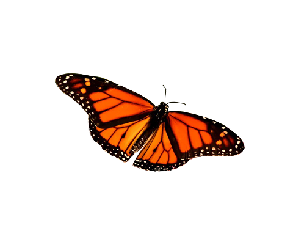
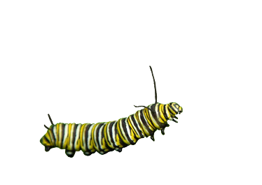
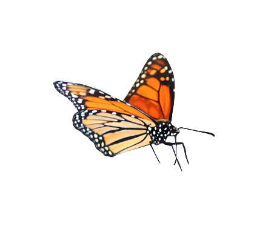
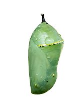
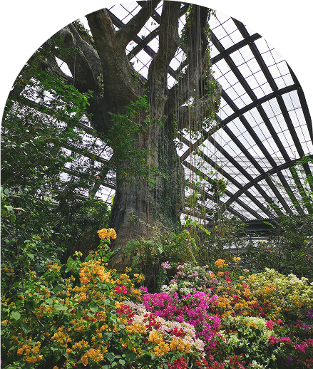

This year's theme centers around the idea that even small changes can makelasting impacts. No matter who you are or what you do, everyone can help the Monarchs trive and ultimately move them off the endangered species list.


All proceeds of this event go to the Monarchs. We work closely with the North American Butterfly Association and have joined forces with environmental scientists all over the country to provide sanctuaries like ours.
Wildlife enthusiast, Johanna McDonald will lead us in a lecture and discussion on the pros and cons of raising Monarch caterpillars indoors, presenting an advanced option of bettering the Monarchs’ chance of survival.
Notable wildlife expert and naturalist, Mike Brown walks us through the generational patterns of the Monarchs and what that means for each step of their extensive migration to Mexico.
The greatest butterfly gardener of our time, Greg Schauer, will be joining us in Atlanta to share his insights on cultivating a garden with butterflies in mind. Greg will go over the quirks of milkweed, keeping a healthy garden, and strategies to attracting Monarchs

The Monarch Joint Venture is dedicated to creating a safe place for butterflies, especially Monarchs. ScienceLabs here in Georgia has created a beautiful greenhouse that fosters vitality for Monarchs at all stages of their life cycle. It is Monarch Joint Venture’s goal to assist Monarchs on their journeys, not to keep them in captivation. The Monarch Sanctuary is a rest stop for traveling butterflies, a nursery fore caterpillars and a safe have for butterflies in their chrysalises. During the conference, you have a unique opportunity to step into their world and witness the Monarch lifestyle for yourself!
Learn about the different types of milkweed, nectar plants and go through the pros and cons of different environments in the Confidential United States. In this workshop, our experts will help you gather the supplies to start your very own butterfly garden. You will be able to select the plants that will work best in your specific climate from our arrangement of seeds, cuttings and seeds. Included with this workshop is a personalized garden kit, as well as one-on-one advice with famous butterfly gardener, Greg Schauer.
Reserve Your SpotPhotos by Unsplash
Logo by the Monarch Joint Venture
Privacy Policy
Terms & Conditions